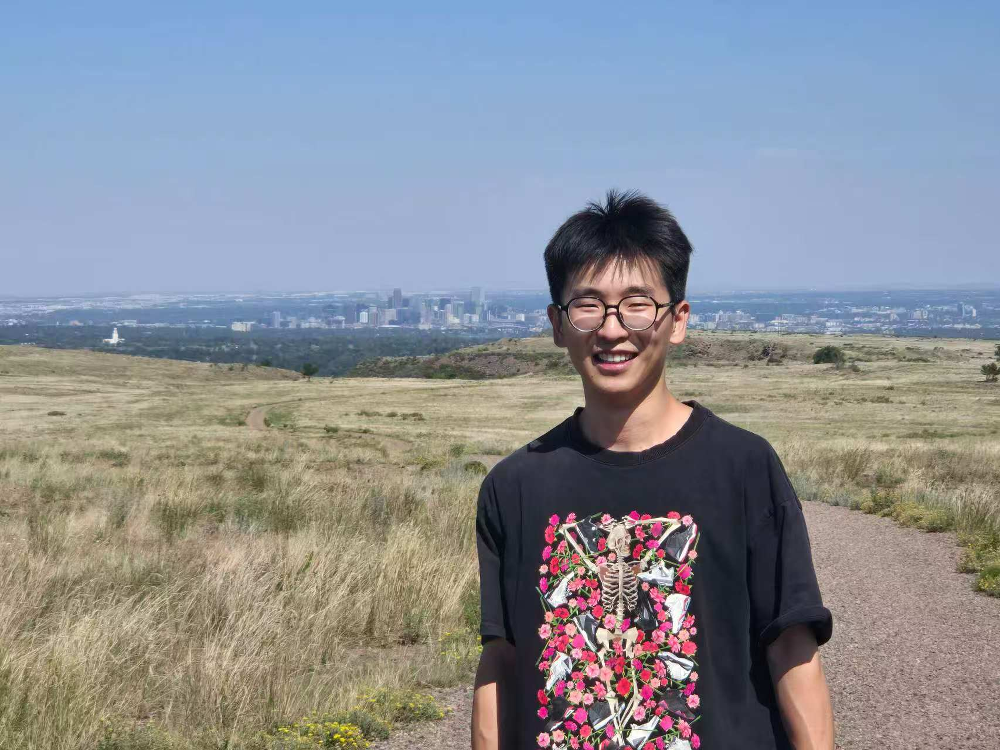

中国地质大学（武汉） — 博士研究生2024 — 至今
地质资源与地质工程 · 油气地球物理勘探 · 导师：郭小文 教授

博士研究生 · 油气地球物理勘探｜Ph.D. Student in Petroleum Geophysics
中国地质大学（武汉）· 资源学院 · 导师：郭小文 教授
2026 访学于 Colorado School of Mines（科罗拉多矿业学院）· 导师：Ge Jin（金戈）
我是中国地质大学（武汉）资源学院博士研究生，师从郭小文教授，研究方向为油气地球物理勘探，聚焦地层孔隙压力预测、含油气盆地分析与油气成藏动力学。2026 年 7–10 月于美国科罗拉多矿业学院（Colorado School of Mines）地球物理系联合培养，导师 Ge Jin（金戈）。
硕士与本科分别就读于中国地质大学（武汉）与成都理工大学资源勘查工程专业。我尤其擅长将编程与深度学习方法引入油气地质与地球物理问题——独立开发了多款地质数据处理与古压力恢复软件，并申请了多项发明专利与软件著作权。为人踏实肯干，具备较强的团队协作、快速自学与创新能力。业余喜欢篮球、足球、羽毛球、游泳，也热爱旅行与摄影。
地质资源与地质工程 · 油气地球物理勘探 · 导师：郭小文 教授
地球物理系（Geophysics）· 导师：Ge Jin（金戈）
地质资源与地质工程 · 学分绩点 3.91 / 4.0 · 导师：郭小文 教授
研究方向：含油气盆地分析、油气成藏动力学、储层成岩作用、石油油藏流体相态与 PVT、油气地质分析技术与方法。
资源勘查工程 · 导师：宋金民
主修课程：普通地质学、构造地质学、石油与天然气地质学、沉积岩石学与岩相古地理、古生物学与地层学、层序地层学、油气地震勘探、油气地球物理测井、油气地球化学等。
国家重大专项 · 中石化胜利油田分公司 · 主要负责
中石化胜利油田分公司（油气勘探管理中心）· 主要负责
横向项目 · 参与人员
负责渤中地区地球物理地震与测井数据的提取和压力计算，并开展生烃增压模拟。
国家自然科学基金项目 · 主要负责
负责苏北盆地深部 CO₂ 流体成因、CO₂ 在储层中的压力演化及其对油气保存的指示意义、CO₂ 与油气成藏时间，以及 CO₂ 对烃源岩和储层中油气成藏过程的影响。
发明专利 · 申请号 202511504732.9 · 第一发明人
发明专利 · 申请号 202610173209.0 · 第一发明人
基于 Python 独立开发，并已申请软件著作权。
甲烷 / 二氧化碳包裹体古压力恢复、稀土元素处理、荧光光谱分析；以及基于 PyTorch / MATLAB 的测井数据泥岩 TOC 神经网络预测。
欢迎就科研合作、访学交流或求职机会与我联系。
Feel free to reach out about research collaboration or opportunities.